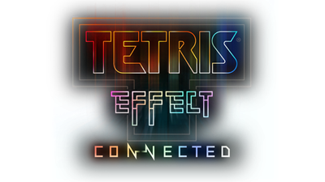

Tetris
Little did I know, Tetris, the classic video game, can be related to machine learning and data analytics in various ways.
I am a huge fan of the game, and I am obsessed with a newer version that facilitates multi-player options; Tetris® Effect: Connected.

Below is a video demonstrating one of the newer multiplayer options, Zone Battle. This is me playing in the video (tacobaco32) and I like to say I’m pretty good at the game.
VIDEO DEMONSTRATING TETRIS EFFECT
I decided to stream on twitch a few times… that didn’t go anywhere. There are several other players that I’ve seen stream online, like doremypuyotet, who is a Tetris expert; the video below is them playing.
[]()
As you can see doremypuyotet has incredible technique and it is absolutely mind blowing watching them play the game.
I wondered though, how would an Artificial Tetris Agent perform at a game of zone battle against someone like doremypuyotet? The agent would have to take several more aspects into consideration than it does in the classic video game. The dynamics of player interactions, adaptive game play, and the wealth of data generated present opportunities to enhance the gaming experience through data-driven insights and algorithmic optimization’s.
Tetris Applications to Machine Learning
Optimization and Heuristics
Algorithmic Efficiency: Tetris involves optimizing the placement of falling blocks to complete lines. This is analogous to optimization problems in machine learning where algorithms seek to minimize or maximize a certain objective function.
Heuristics: Players often develop heuristics or rules of thumb to make decisions quickly. Similarly, in machine learning, heuristics can be used to guide algorithms toward solutions without exhaustive search.
Reinforcement Learning
Learning from Experience: Reinforcement learning involves agents learning by interacting with an environment and receiving feedback in the form of rewards or penalties. In Tetris, players learn from the consequences of their moves, much like reinforcement learning algorithms learn from trial and error.
Pattern Recognition
Feature Extraction: In Tetris, players recognize patterns in the falling blocks to make decisions. In data analytics, feature extraction involves recognizing patterns in data to enhance the performance of algorithms.
Image Recognition: Tetris can be framed as an image recognition problem where the goal is to identify patterns in the arrangement of blocks. Image recognition is a common application in machine learning.
Predictive Analytics
Anticipating Future States: In Tetris, players need to anticipate the future states of the game based on the current configuration of blocks. Predictive analytics in machine learning involves forecasting future trends or outcomes based on historical data.
Data-driven Decision Making
Real-time Decision Making: Tetris requires quick decision-making based on the constantly changing game state. In a similar vein, real-time data analytics involves making decisions based on rapidly changing data streams.
Data Visualization
Spatial Visualization: Tetris involves visualizing the spatial arrangement of blocks. Data visualization is a crucial aspect of data analytics, helping individuals understand complex patterns and trends in data through graphical representations.
Evolutionary Algorithms
Genetic Algorithms: Tetris can be approached as a problem of evolving a strategy over time. Genetic algorithms, a type of evolutionary algorithm, involve evolving solutions to problems through processes inspired by natural selection.
Algorithmic Complexity
Complexity Analysis: Analyzing the complexity of Tetris strategies can be similar to analyzing the time and space complexity of algorithms in machine learning. Understanding the efficiency and scalability of algorithms is essential in both contexts.
Big Data
Managing Information Overload: Tetris speeds up as the game progresses, leading to an increasing amount of information to process. Dealing with information overload is a challenge in both Tetris and big data analytics.
Competition and Strategy
Game Theory: Tetris can be viewed through the lens of game theory, where players make strategic decisions to maximize their score. Game theory concepts are also applicable in various areas of machine learning, such as in competitive scenarios.